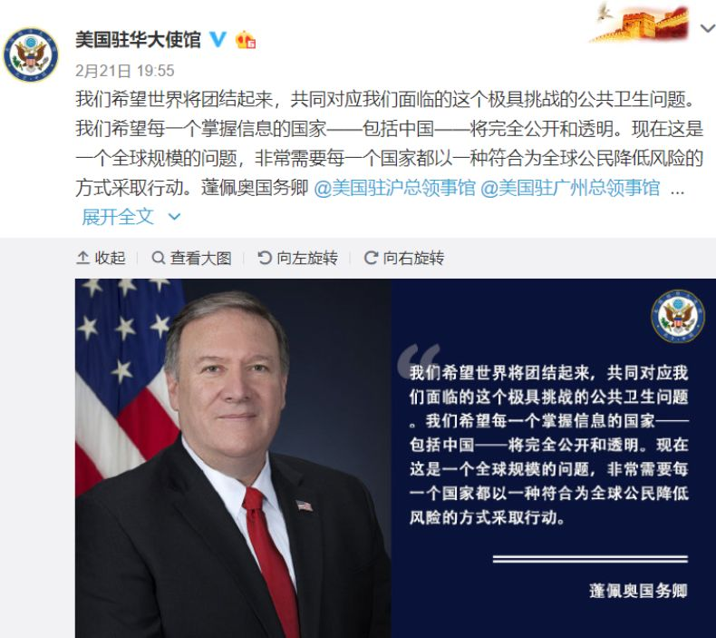
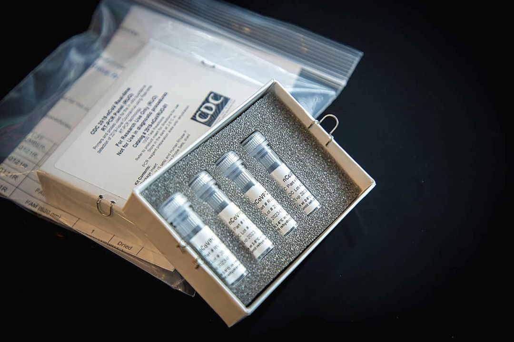
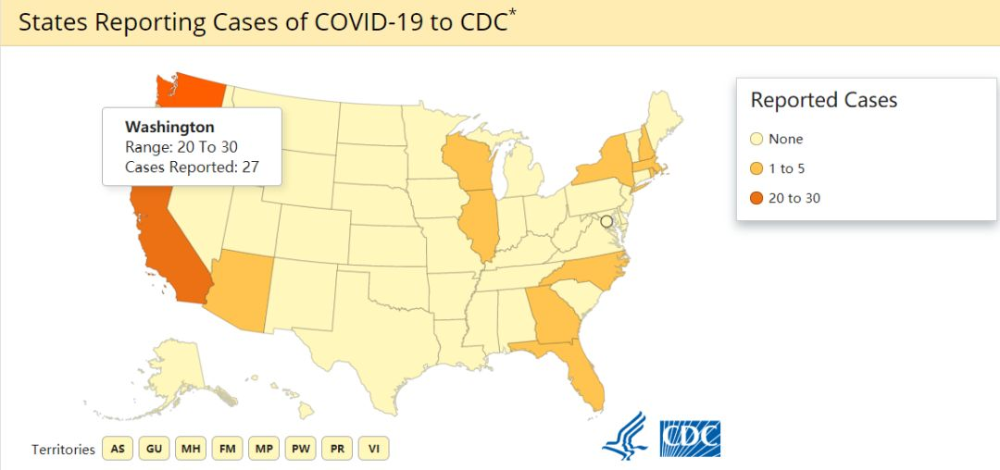

美国两百年镜鉴：如何把灾疫挡在第一道防线之外
原文链接 备份链接 在美国过去200多年抗击传染病的经验中，最重要的一条也许是：学会利用“坏消息”去纠正问题，并把它变成习惯和制度 ***********金焱 | 文*********** …
Original 杨大可 DeepTech深科技
DeepTech深科技 
About Feature DeepTech是一家关注新兴科技产业化的全链条内容、服务、数据和投融资平台，致力于构建一个全球科技创新合作网络。
Today

在中国每天实时公布新冠疫情发展相关数据的同时，美国对疫情信息不公开的最新举措和让科学家 “闭嘴” 的行径，对比愈发明显。
在 3 月 3 日世卫组织对新冠疫情的例行媒体会上，总干事谭德塞强调：不要将新冠病毒疫情和过往的季节性流感同一而论。并且呼吁：“各国应采取综合措施尽一切可能遏制疫情，不能完全像对待流感一样对待此次疫情。此外，世卫组织鼓励各国开展这类研究并分享它们的数据。”
话音未落，便有媒体记者在当日曝出 “CDC 已经停止公布在美接受新冠病毒检测的人数”。而该情况在 DeepTech 近日撰写新冠病毒是否是“大流行” 病一文时也有发现，因为在查找各国疫情确诊数据时，美国疾病控制和预防中心（CDC）官网的数字远低于美国媒体已曝出的确诊人数。
而随后 CDC 在 3 月 4 日通过社交媒体发布通知，证实了这一说法。其解释道：由于美国目前各个州在进行独立的检测，这些数字将不能代表全国的检测情况；因此，疾控中心已停止公布 “接受新冠病毒检测人数” 和“检测结果为阴性人数”等数据。此外，各州是否有新冠病毒确诊人数，将以 “Yes” 或“No”来反映有无情况。

图 | CDC 官方账号在社交媒体的公告（来源：Twitter）
此公告一经发布，便在美国国内引起轩然大波，不断有人在社交媒体上留言指责 CDC 的 “不作为”，称其在为特朗普政府“隐瞒疫情”。还有网友提出了质疑，表示“既然是各州分别检测，那各州的报告又在哪里体现呢？另外，难道全国就不能做一个加法计算么？这甚至连乘除法都用不上！” 更有民主党议员直接致信 CDC，表示“美国人民应该得到答案”。
面对美国民众和议员们的质疑，美国疾控中心下属国家免疫和呼吸系统疾病中心主任南希 · 梅索尼耶（Nancy Messonnier）博士在新闻发布会再次解释称，由于现在许多州都在独立检测并报告自己的检测结果，美国疾控中心公布的任何数字“都不能代表全国范围内正在进行的检测情况”。
同时，她还表示，目前美国还没有一个类似数据 “直报” 的系统，但 CDC 正在 “升级系统”，争取在一周内完成，以便能实时追踪全美范围内与新冠肺炎疫情相关的各种数据。“疾控中心肯定会继续对新冠病毒检测人数进行追踪，但不会实时披露这些数字。” 南希补充道。
但是上述解释并没有打消美国民众的质疑，人们纷纷表示，疾控中心甚至都没有说明未来会不会，或者说在何时以何种方式来公布检测人数。在发生该问题之前，美国至少有 12 个州报告了 157 例新型冠状病毒感染病例，其中已有 11 例死亡。

图 | 美国驻华大使馆曾在 2 月 21 日呼吁各国信息要“完全公开和透明”（来源：新浪微博）
南希 · 梅索尼耶在新闻发布会上还说道，“鉴于其他国家疫情发展情况，美国现在正在发生的事情可能是国外正发生情况的开始。我们将在可行的范围内，继续保持积极的国家遏制态势。简单来说，人们可能看到一些当地社区正在采取具体行动来减轻这种疾病，比如，关闭学校、取消活动和大型聚会，以及将人们隔离在家里等。”但在新闻发布会的其余时间里，南希 · 梅索尼耶一直在试图回避有关 CDC 对新冠病毒疫情反应的问题。
在更早些时候，由于在新冠病毒检测上，美国并未使用世卫组织分发的试剂盒，而是单独研发了一种同类产品。但在 3 月 1 日，其被曝出 CDC 自研的第一批新冠病毒检测试剂盒中存在某个部件的缺陷，导致全美众多公共卫生实验室无法使用，妨碍了目前已在多个州暴发的疫情的检测。甚至，还导致了圣地亚哥一医院误将新冠病毒阳性病患释放的错误。
根据美国 Axios 新闻网最近的一份报告显示，这些试剂盒可能已被污染。对此，南希 · 梅索尼耶解释道：“污染的说法，只是对该问题的一种可能解释。还有其他解释，但我不能对正在进行的调查发表评论。”美国食品药品监督管理局（FDA）局长斯蒂芬 · 哈恩（Stephen Hahn）也发表声明回应：FDA 已被提醒注意美疾控中心可能存在的相关问题，有官员已与美疾控中心进行合作，以确定某些试剂盒组件的缺陷是否是制造问题带来的。

图 | CDC 用于新冠病毒的核酸检测试剂盒（来源：CDC 官网）
除上述问题之外，CDC 还因向公共卫生机构提供有关 “谁应该接受检测” 的限制性建议而受到批评。之前 CDC 建议医护人员主要对到过中国出差或已知与感染人群有过接触的人进行检查。一些卫生人员表示，该指南限制了他们去测试有可能感染新冠病毒但却不符合这些检测标准的患者。
为此，CDC 否认了其以这种方式限制测试。美国疾控中心的新闻官发表声明指出：“CDC 针对接受新冠病毒检测者的指导还包括一句，如果患者不符合特定的检查标准，但又有较高的新冠病毒临床怀疑度，也允许对患者进行检查。”但是，根据美国媒体报道，在美国接受新冠病毒检测需要 2000~4000 美元不等的花费，而这些花销只有比较好的保险才会负担。
负责统领美国新冠疫情全局的副总统迈克 · 彭斯（Mike Pence）对外曾表示：除了私人保险公司之外，医疗保险和医疗补助计划将会涵盖新型冠状病毒的检查，因为这种检查对健康至关重要。但他并没有详细说明未投保的美国人会发生什么。
南希 · 梅索尼耶也在发布会上对有关测试问题进行了统一回答：“我们现在真正需要关心的，应该是我们今天在疫情中所处的位置。”当她被问到是否被允许在疫情爆发时发表自由言论，或者特朗普政府是否限制她的言论时，南希没有直接作答，只是说在这次疫情暴发期间，CDC 将“变得非常开放，能够回答很多不同的问题。”
而在 2 月底，副总统彭斯曾召集过美国卫生部门的官员和学者开会，明确大家要“口径一致”，在发布任何有关新冠疫情的信息之前均需要向他汇报。

图 | 《华盛顿邮报》记者 Mary Jordan 在社交媒体上披露：“CDC 从特朗普政府手指拿到了 7 个禁忌词汇，包括基于科学的、跨性别的、多样性的、脆弱的、胎儿的、基于证据的、权利的。”（来源：Twitter）
关于上述 “禁忌词汇” 的名单来自 CDC 内部，并早在 2017 年就被曝出。美疾控中心被建议避免使用 “基于科学的”“跨性别的” 和“多样性的”等术语，以便能够获得更好的政府财政预算倾斜的机会。为此，有人回复道：“这场疫情之后，更令人担忧的是，当我们从一个害怕‘基于科学’数据的政府那里获得关于健康危机的信息时，每个人是否都能意识到政府到底在做些什么事情。”
对于美国应对此次疫情发生的种种问题，美国公共卫生实验室协会传染病主任凯利 · 沃布洛夫斯基（Kelly Wroblewski）对媒体表示：“我不记得它（如此多的错误）曾经发生过，现在或许是制造问题的最不幸时机。”此外，公共卫生实验室协会估计，如果到本周末可以启动并运行 100 个实验室，那么每天可以进行约 10,000 次测试。
对此，北卡罗来纳大学冠状病毒和新型疾病研究人员拉尔夫 · 巴里奇（Ralph Baric）评价道：“看看疫情扩散到其他国家后的反应，韩国人为什么一天内可以做 10,000 次测试，而我们现在却做不到？”哈佛大学的流行病学专家迈克尔 · 米纳（Michael Mina）博士也说道：“这种无能的的确确超出了人们对 CDC 的期望。在病毒领域，这并不是一个很难解决的问题。”
即便 FDA 已经打破了僵局，授权给各州和地方实验室自行进行初始检测。但范德比尔特大学医学院传染病专家威廉 · 沙夫纳（William Schaffner）表示：“其他国家的检测范围比我们要广泛得多，如果这是一场赛跑，其他人在比赛的同时，我们正在慢跑。”
耶鲁大学教授，医疗保健管理、放射学的专家霍华德 · 福尔曼（Howard Forman）则预测，由于行动的迟缓，“在美国，现在有 10 万人感染新冠肺炎都是完全有可能的。医护人员可能被感染，其他患者也可能被感染，在你不能让人们对安全保障有信心之前，我们就陷入了危机。”

图 | CDC 用地图来显示美国各州确诊情况，注意采用了 “Range（范围）” 一词来表示数字（来源：CDC）
就在美国应对疫情采取如此多的 “迷幻操作” 之时，还有美国媒体主持人杰西 · 沃特斯（Jesse Watters）在 FOX 电视台的节目上发表针对中国的，有着明显种族主义色彩的言论：妄称新冠病毒的源头在中国，想要求 “中方向外界道歉”。而当其他主持人问道：“假如病毒源于美国呢？” 他还信口开河，“他们吃不饱，所以会去吃野味那些不干净、没有煮熟的食物；这就是科学家认为的病毒起源。”
世卫组织几乎在每次针对新冠疫情的例行媒体会上都会强调，目前新冠病毒的源头仍未确认。目前也有众多论文显示了，“武汉华南海鲜市场并非是病毒源头”。在没有任何科学论据下，一个主持人发表上述 “反智” 言论，或许才应反思自己是否该对外道歉。
在纽约一线的传染病医生在 3 月初就曾向媒体抱怨过，“已经到 3 月了，我们手上仍然没有检测工具。”美国威尔 · 康奈尔大学医学助理教授、现就职于纽约长老会医院的麦卡锡说，“对于国家来说，应该是很简单的事情。但是我至今还没有拿到快速检测试剂，这糟糕透了，简直是国家级的丑闻。”
总而言之，虽然鉴于体制的不同使得很多国家或许无法直接参考中国应对疫情的各种措施。但在新冠疫情于全球范围快速蔓延之时，中国在控制疫情的一些关键且取得良好效果的表现才应是其他国家所关注和借鉴的。但如果说只想简单认为 “这不过就是另一种流感”，那么感染人数，甚至死亡人数或许最终也不过是 CDC 官网上，与对流感估算的“会有 9,000~18,000 左右人死亡” 类似的统计数字罢了。
或许有人不会记得，“那不是一堆冰冷的数字，而是一个个鲜活的生命。”
-End-
参考：
https://www.nytimes.com/2020/03/04/health/coronavirus-test-demand.html
https://www.cdc.gov/coronavirus/2019-ncov/index.html
https://twitter.com/search?q=%23Coronvirus%20CDC&src=recent_search_click

原文链接 备份链接 在美国过去200多年抗击传染病的经验中，最重要的一条也许是：学会利用“坏消息”去纠正问题，并把它变成习惯和制度 ***********金焱 | 文*********** …
原文链接 备份链接 CDC表示一天能做的测试只有100个，有些力不从心。 文、图 | 李 莹 今天（3月2日）是我滞留在美第38天#详见《口述实录 | 我大年夜出发去美国自助游，直到现在还被困在旧金山》#，美国已有100例新冠病毒感染肺炎 …
原文链接 备份链接 图片来源：Wikimedia Commons 记者：肖恩 “ 有专家认为，检测人数少是美国目前确诊病例不多的原因。 ” 疑似首例新冠肺炎社区传播病例让美国提高了警惕，疾病控制与预防中心（CDC）也为此修改检测标准。但 …
原文链接 备份链接 目前包括中国大陆在内，全球已经有41个国家和地区出现了疫情，其中，韩国是中国大陆之外疫情蔓延最快的国家。 尽管如此，世卫组织不希望在“没有谨慎和清晰地分析事实情况之前”仓促宣布疫情为全球“大流行病” 文 |《财经》特派 …
原文链接 备份链接 大家新闻里总是听到“核酸检测试剂盒”这个东西，试剂盒里的试剂自己不能判断阴性阳性的，这些试剂要放到我负责的核酸检测设备里，才能得出检测结论。 口述 | 彭 鑫 整理 | 黄 祺 现在大家说起去湖北，都感到非常恐惧。但因 …